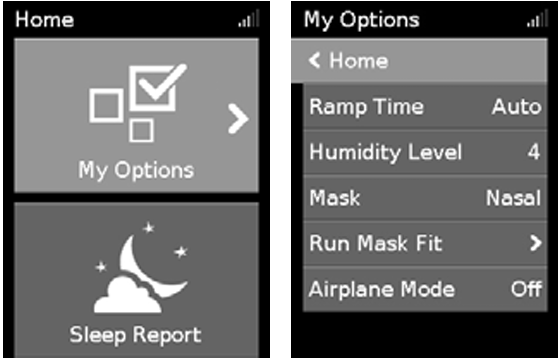
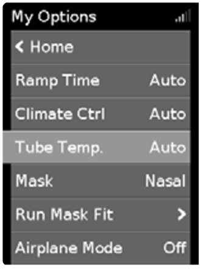
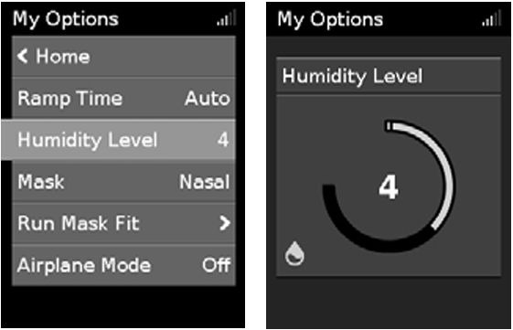
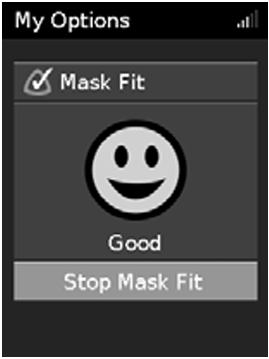

Note: If using ClimateLineAir tubing, the My Options screen will look like this.

When Climate Control is set to Auto with ClimateLineAir, the Humidity Level is set automatically by the machine. To alter humidity settings yourself, Climate Control must be changed to Manual. Refer to the ClimateLineAir tubing manual for instructions.
Designed to make the beginning of therapy more comfortable, Ramp Time is the period during which the pressure increases from a low start pressure to the prescribed treatment pressure.
You can set Ramp Time to Off, 5 to 45 minutes, or Auto. When Ramp Time is set to Auto, the device detects when you have fallen asleep and then automatically rises to the prescribed treatment pressure.
The humidifier moistens the air and is designed to make therapy more comfortable. If you are getting a dry nose or mouth, increase the humidity level. If you are getting moisture in your mask, decrease the humidity level.
You can set the Humidity Level to Off or between 1 and 8, where 1 is the lowest humidity setting and 8 is the highest humidity setting.

If you continue to experience a dry nose or mouth, or moisture in your mask, consider using ClimateLineAir heated air tubing. ClimateLineAir together with Climate Control delivers more comfortable therapy.
Mask Fit is designed to help you assess and identify possible air leaks around your mask.

To stop Mask Fit, press the dial or Start/Stop.
If you are unable to get a good mask seal, talk to your care provider.
There are some additional options on your device that you can personalise.
*When enabled by your care provider.